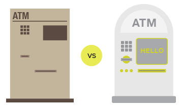
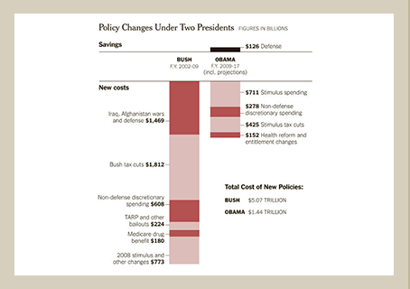
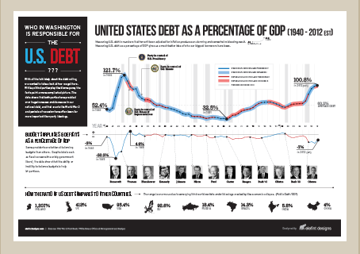
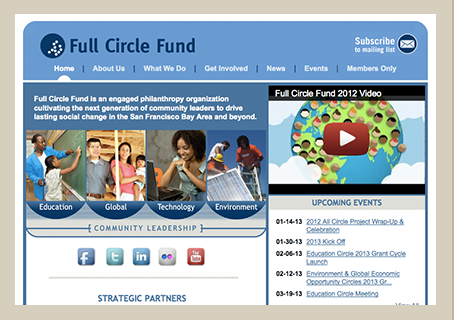
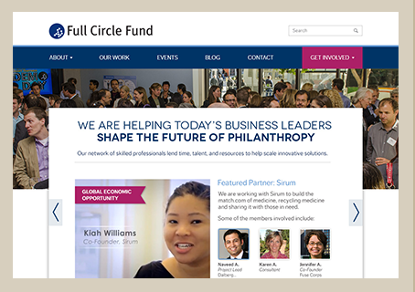

Design Influences Our
Behavior
When the brain doesn't have to struggle with poor design, it’s more effective.
This study by [...] placed two ATMs side by side. Both had the same controls, but one had attractive visual design while the other did not. People using the more attractively designed ATM were able to complete actions faster than the other group.

When the brain doesn't have to struggle with poor design, it’s more effective.
This study by [...] placed two ATMs side by side. Both had the same controls, but one had attractive visual design while the other did not. People using the more attractively designed ATM were able to complete actions faster than the other group.
Our eyes have amazing resolution at our central point of focus...
Try this experiment- Look at the dot to the right.
- Without moving your eyes, see how far to the right you can see clearly.
Is it blurry? That’s because our eyes have terrible peripheral vision. Strategic design integrates all sorts of cool science like this.
once we hear the beginning of a story, we just have to know...
Psychology and Neuroscience are two of the most interesting areas overlapping with design these days. From pattern recognition to the latest in gamification, by understanding how our brains and minds work, we can design more satisfying and effective experiences.
Evidence of the
Power of Design

EXAMPLE 1:
Two Perspectives on U.S. Debt
In the summer of 2011, amidst a battle over raising the debt ceiling, there was no shortage of partisan finger pointing going on. This chart from the New York Times – which bucked the trend of blaming liberals for runaway debt–was incomplete at best.
EXAMPLE 1:
Two Perspectives on U.S. Debt
In the summer of 2011, amidst a battle over raising the debt ceiling, there was no shortage of partisan finger pointing going on. This chart from the New York Times – which bucked the trend of blaming liberals for runaway debt–was incomplete at best.

EXAMPLE 1:
Two Perspectives on U.S. Debt
Since Congress has as much, if not more to do with government spending than the President, and since the state of the economy trumps both of them, Elefint decided to make a non-partisan infographic that painted a richer picture.
View full infographic hereEXAMPLE 1:
Two Perspectives on U.S. Debt
In the summer of 2011, amidst a battle over raising the debt ceiling, there was no shortage of partisan finger pointing going on. This chart from the New York Times – which bucked the trend of blaming liberals for runaway debt–was incomplete at best.
EXAMPLE 1:
Two Perspectives on U.S. Debt
In the summer of 2011, amidst a battle over raising the debt ceiling, there was no shortage of partisan finger pointing going on. This chart from the New York Times – which bucked the trend of blaming liberals for runaway debt–was incomplete at best.
EXAMPLE 1:
Two Perspectives on U.S. Debt
Since Congress has as much, if not more to do with government spending than the President, and since the state of the economy trumps both of them, Elefint decided to make a non-partisan infographic that painted a richer picture.
View full infographic here

EXAMPLE 2:
FULL CIRCLE FUND
BEFORE AND AFTER
Full Circle Fund connects business leaders in the Bay Area to innovative nonprofits who can use their varied expertise to scale important solutions. With a model that wasn't always clear to potential members, funders, and organizations, an important fundraising event, and a website that seemed a bit outdated, a re-design seemed to be in order.
EXAMPLE 2:
FULL CIRCLE FUND
BEFORE AND AFTER
Full Circle Fund connects business leaders in the Bay Area to innovative nonprofits who can use their varied expertise to scale important solutions. With a model that wasn't always clear to potential members, funders, and organizations, an important fundraising event, and a website that seemed a bit outdated, a re-design seemed to be in order.

EXAMPLE 2:
FULL CIRCLE FUND
BEFORE AND AFTER
Elefint created a suite of materials to reenergize the brand. One component of this re-design was a beautiful new responsive site that highlights what Full Circle Fund does, their value proposition and clear calls to action.
our
Philosophy
Elefint Designs believes that non-profits, NGOs, social startups, innovators, and the like deserved design as clever and beautiful as for profit businesses. We start with clear strategic goals, and seek to produce designs that are both beautiful and effective.

From the simplest deliverable to a complete brand overhaul, strategy is baked into all we do. More about this in our process below.
As important as strategy is, its just as important to make sure projects move forward within a reasonable timeline. While we strive for an ideal process, we can usually find a way to proceed when not every piece is in place.
After all the critical thinking and preparation is done, the project has to finish with excellent design. We see every project as a chance to create something beautiful that adheres to our high standards.
jump down the rabbit hole:
our process
"If you don't know where you're going, any road'll take you there". While this may be a good strategy for some, most organizations generally want to be more strategic with their branding and design.